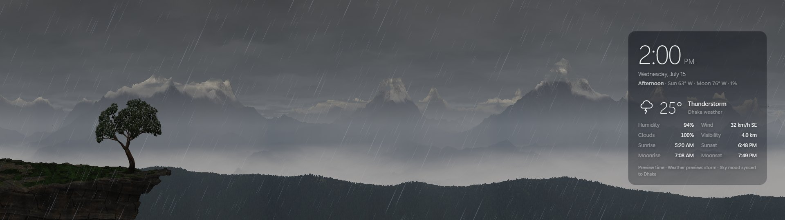
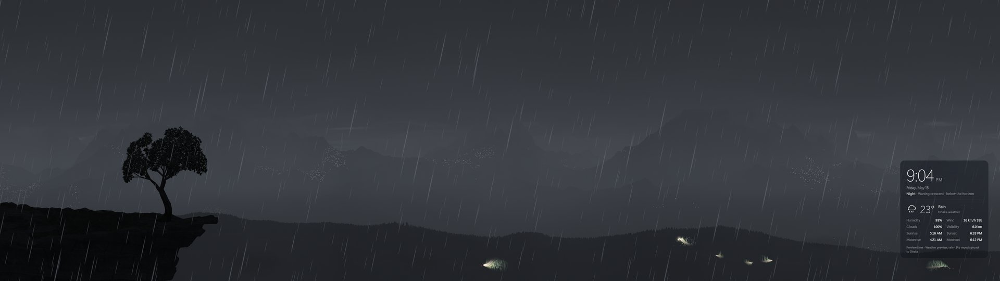
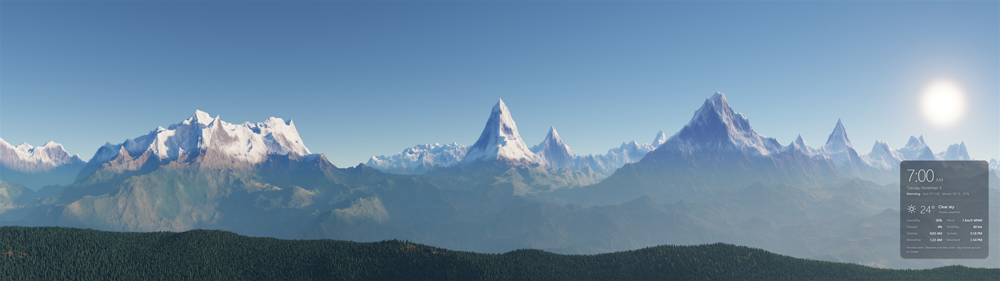

A wallpaper that follows the real world
- Real sky. Sunrise, golden hour, sunset and night happen at the true times for your location. The moon shows its real phase and the stars turn through the night.
- Live weather. Cloud cover, rain, storms, fog, mist and wind come from your local forecast, and changes build and clear naturally.
- Real wind. Clouds move at the true wind speed for their height. Gusts cross the forest, and a rhododendron on the cliff edge sways, gets wet in rain and flowers red in spring.
- Wildlife and villages. Vultures circle on calm middays, geese cross during the real migrations, chimneys smoke at dinner time and village lights come on at dusk.
- Light on your PC. It runs at below-normal priority and can rest whenever a window is in front of it. A dedicated graphics card is not needed.
- Free and open source. No ads, no account and no paid version, under the MIT licence.



How to install
Windows 11 version 24H2 or later
- Download LivingEarthHimalaya-2.0.1.exe and move it somewhere it can stay, such as your Documents folder.
- Double-click it. There is no installer and it does not need admin rights.
- Choose your location and options, then click Set wallpaper.
The first start prepares the graphics and shapes the mountains, which can take a few minutes. Later starts take about 15 seconds.
Windows 10 and older Windows 11
Only on these versions, the free Lively Wallpaper app puts it behind your icons.
- Install the free Lively Wallpaper app from the Microsoft Store.
- Download the Lively zip. In Lively, click + and choose it.
- For two monitors, choose Span in the monitor selector.
System requirements
| Windows | Windows 11 version 24H2 or later for the app. Windows 10 and older Windows 11 through Lively Wallpaper. |
|---|---|
| Graphics | Any graphics chip with WebGL 2. A dedicated graphics card is not needed. |
| Screens | One or two. Designed for 1920 × 1080 each (3840 × 1080 together). Other sizes adapt. |
| Internet | Optional. Used for live weather and finding your location. |
| Tested on | Windows 11, Intel Core i3-12100, Intel UHD Graphics 730, 16 GB of memory, two 1920 × 1080 monitors. Weaker graphics chips have not been tested. If yours struggles, set Quality to Eco. |
Frequently asked questions
How do I get a live wallpaper on Windows 11?
On Windows 11 version 24H2 or later, download the exe, run it and click Set wallpaper. It sits behind your desktop icons like a normal wallpaper.
Is it free?
Yes. It has no ads, no account and no paid version. The source code is under the MIT licence.
Will a live wallpaper slow down my PC?
It uses your graphics chip while it animates, and it is built to stay out of the way of your other work. Choose "Animate while you look at the desktop" and it does the least while a window is in front. If it still feels heavy, set Quality to Eco.
Do I need Lively or Wallpaper Engine?
No. The exe sets the wallpaper by itself on Windows 11 version 24H2 or later, with nothing else to install. Lively is only for older versions of Windows.
Does it work with two monitors?
Yes. It was designed as one 3840 × 1080 panorama across two screens, and it also works on a single monitor.
Does it work on Windows 10?
Use the Lively download with the free Lively Wallpaper app. The Windows app needs Windows 11 version 24H2 or later.
What does it send over the internet?
It asks Open-Meteo for the weather at your location, and the Windows app can look up where you are. It has no accounts, no ads and no tracking. The privacy section of the README lists every service.
How it was made
Living Earth Himalaya was developed fully by an AI assistant: Claude, working in Claude Code. It wrote the WebGL 2 renderer, the shaders, the Windows app and the tests. Its author, Khan Rafaat Abtahe, set the goals, watched the result on a real two-monitor desktop and pointed out what looked wrong.